조사개요
- ■ 기간 / 대상 2020. 10. 15.∼10. 29.(15일간) / SGIS 서비스 이용자
- ■ 조 사 방 법 KOSTAT·KOSIS·SGIS 홈페이지를 통한 온라인 설문조사
- ■ 조 사 내 용 콘텐츠별 이용현황, 만족도 및 개선의견 등 조사
1. 설문참여 현황
-
성별 참여현황여자 1,514명(66.1%), 남자 777명(33.9%)으로 여성의 참여비율이 높았음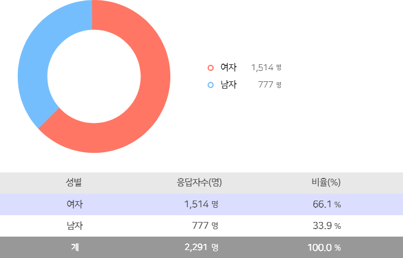
-
연령별 참여현황30대가 1,078명(47.1%)으로 참여율이 가장 높았으며, 20대 519명(22.7%), 40대 447명(19.5%), 50대 159명(6.9%), 60세 이상 72명(3.1%) 순이었으며, 19세 이하가 16명(0.7%)으로 참여율이 가장 낮았음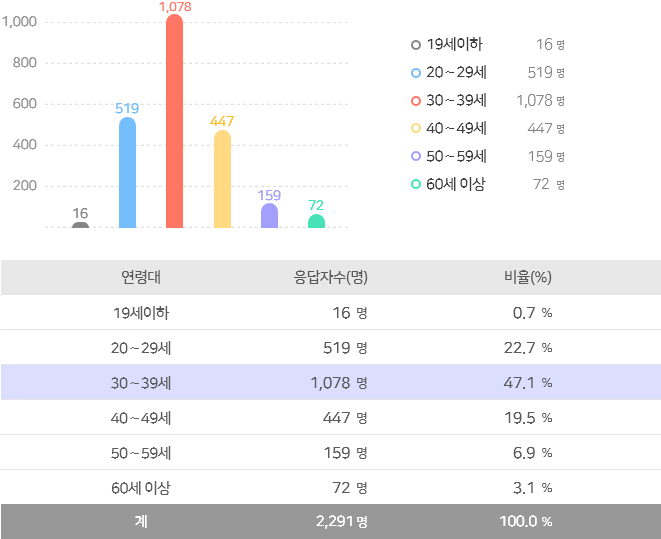
2. 문항별 설문조사 결과
-
SGIS 인지도SGIS 서비스에 대해서는 응답자의 940명(41.0%)은 ’알고있음’으로 응답하여 가장 많았고, ’잘은 모르지만 들어는 봤음’ 475명(20.7%), ’잘 알고 있음’ 448명(19.6%), ’매우 잘 알고 있음’ 428명(18.7%) 순임[문1] 통계지리정보서비스(이하 “SGIS”라 함)를 알고 계십니까?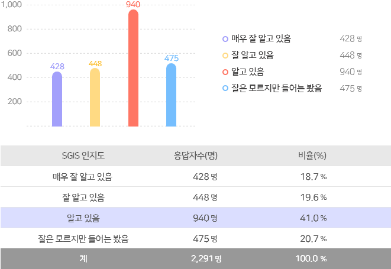
-
SGIS 인지경로(중복응답)응답자의 858명(28.1%)이 ‘통계청 홈페이지’를 통해 SGIS를 알게 되었고, ‘통계청 블로그 및 정책메일’ 558명(18.3%), ‘일반 포털’ 458명(15.0%), ‘KOSIS 국가통계포털’ 381명(12.5%) 순으로 나타남[문2] 통계지리정보서비스(SGIS)를 어떻게 알게 되셨습니까? (중복응답)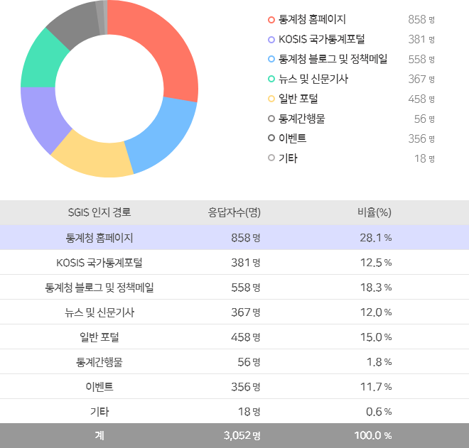
-
SGIS 이용빈도'한 달에 1∼3회‘가 779명(34.0%)으로 가장 많았고, ’1년에 1∼3회’ 621명(27.1%), ’분기에 1회’ 600명(26.2%) 순으로 나타남[문3] 통계지리정보서비스(SGIS)를 얼마나 자주 이용하십니까?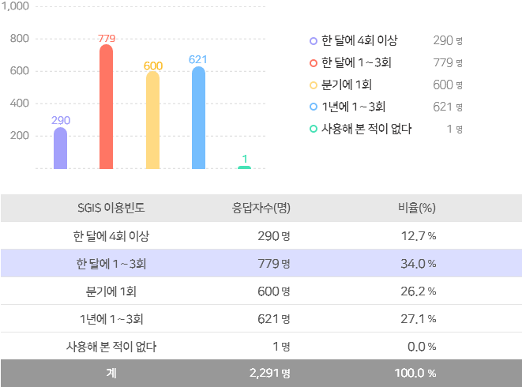
-
SGIS 이용시간이용시간은 ’30분 이내’가 949명(41.4%)으로 가장 많았고, ’10분 이내’ 715명(31.2%), ’5분 이내’ 350명(15.3%), ’1시간 이내’ 187명(8.2%), ’1시간 이상’ 90명(3.9%) 순으로 나타남[문3-1] SGIS 한 번 이용 시 이용시간은 얼마나 되십니까?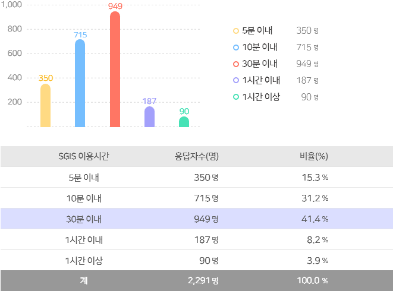
-
SGIS 이용장소이용하는 장소로는 ’집’ 1,244명(54.3%)으로 가장 많았고, ’사무실’ 742명(32.4%), ’카페, 음식점 등’ 180명(7.9%), ’기차, 지하철, 버스 등’ 121명(5.3%), ’기타’ 4명(0.2%) 순으로 나타남[문3-2] SGIS 이용장소는 어디십니까?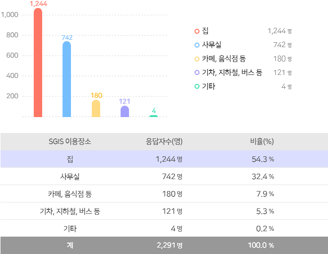
-
SGIS 이용할 때 주로 사용하는 기기SGIS를 이용할 때 주로 사용하는 기기는 ’PC(데스크톱)’ 1,105명(48.2%)으로 가장 많았고, ’스마트폰’ 664명(29.0%), ’PC(노트북)’ 388명(16.9%), ’패드(갤럭시탭, 아이패드 등)’ 132명(5.8%) 순으로 나타남[문3-3] SGIS를 이용하실 때 주로 사용하는 기기는 무엇입니까?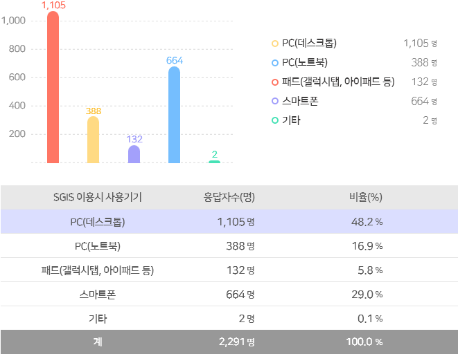
-
SGIS 이용목적이용자는 ’개인적 관심’ 1,356명(59.2%)으로 SGIS를 주로 이용하였고, ’업무’ 707명(30.9%), ’학습연구’ 206명(9.0%), ’기타’ 22명(1.0%) 순으로 나타남[문4] SGIS를 이용하시는 주된 목적은 무엇입니까?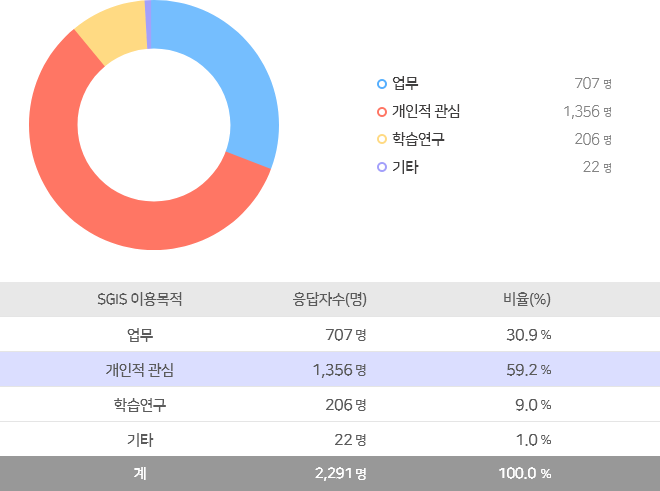
-
주로 이용하는 콘텐츠(중복응답)이용자가 주로 이용하는 콘텐츠는 ’살고싶은 우리동네’ 782명(12.8%)으로 가장 많았고, ’일자리맵’ 637명(10.4%), ’통계주제도’ 618명(10.1%), ’업종통계지도’ 616명(10.1%), ’정책통계지도’ 541명(8.8%) 등의 순으로 나타남[문5] SGIS 서비스 중 자주 이용하는 콘텐츠는 무엇입니까?(중복응답)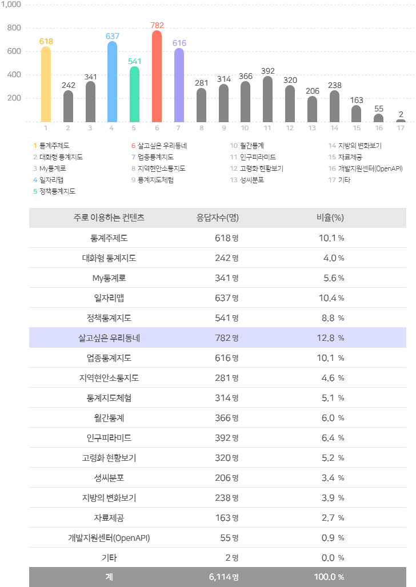
-
SGIS 통계 이해에 대한 만족도SGIS 서비스가 지도와 통계가 융합되어 있어, 통계의 이해에 도움이 되는지에 대하여 이용자는 ‘그런 편이다‘ 1,164명(50.8%)으로 가장 많았고, ‘매우 그렇다‘ 746명(32.6%) 등의 순으로 나타남[문6-1] 지도와 통계가 융합되어 통계 이해에 도움이 된다.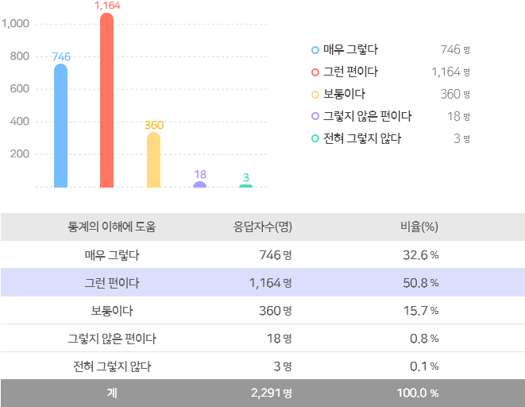
-
SGIS 화면 디자인 및 구성에 대한 만족도SGIS 서비스의 화면 디자인 및 구성에 만족여부에 대하여 이용자는 ‘그런 편이다‘ 1,001명(43.7%)으로 가장 많았고, ‘매우 그렇다‘ 731명(31.9%), ‘보통이다‘ 498명(21.7%) 등의 순으로 나타남[문6-2] 이용 화면 디자인과 구성이 적절하다.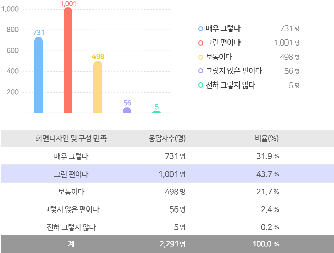
-
SGIS 서비스가 업무에 도움을 주는 정도SGIS 서비스의 내용이 업무에 도움을 주는 정도에 대하여 ‘그런 편이다‘가 963명(42.0%)으로 가장 많았고, ‘매우 그렇다‘ 803명(35.1%), ‘보통이다‘ 470명(20.5%) 등의 순으로 나타남[문6-3] 서비스내용이 업무 등에 도움이 된다.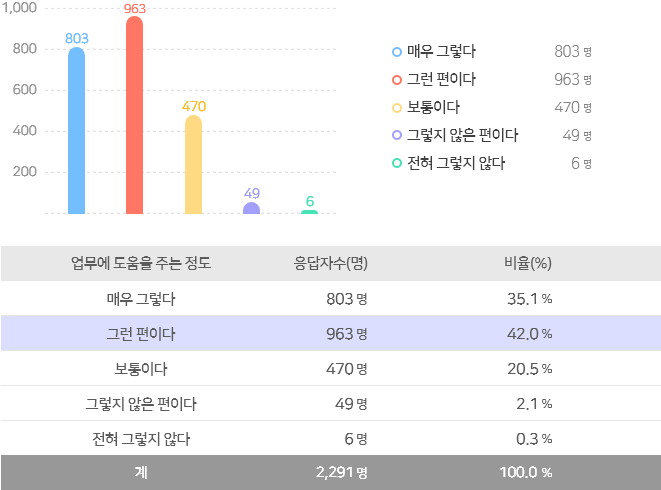
-
SGIS 제공 콘텐츠의 다양함제공하는 콘텐츠의 다양함에 대하여 이용자는 ‘그런 편이다‘ 932명(40.7%)으로 가장 많았고, ‘매우 그렇다‘ 750명(32.7%), ‘보통이다‘ 530명(23.1% ), ‘그렇지 않은 편이다‘ 73명(3.2%), ‘전혀 그렇지 않다‘ 6명(0.3%) 순으로 나타남[문6-4] 제공하는 콘텐츠가 다양하다.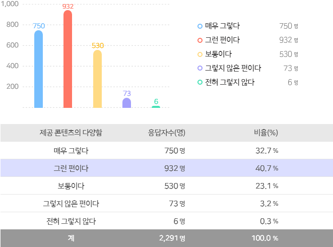
-
’My통계로‘ 화면 디자인 및 구성에 대한 만족도My통계로 서비스의 화면 디자인 및 구성에 만족여부에 대하여 이용자는 ‘그런 편이다‘ 966명(42.2%)으로 가장 많았고, ‘매우 그렇다‘ 679명(29.6%), ‘보통이다‘ 569명(24.8%) 등의 순으로 나타남[문6-1-2] 이용 화면 디자인과 구성이 적절하다.
-
My통계로 서비스 이용의 편리성My통계로 서비스 이용의 편리성에 대하여 이용자는 ‘그런 편이다‘ 960명(41.9%)으로 가장 많았고, ‘매우 그렇다‘ 709명(30.9%), ‘보통이다‘ 525명(22.9%) 등의 순으로 나타남[문6-1-3] 서비스 이용이 편리하다.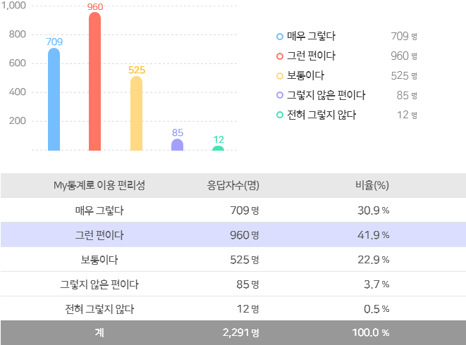
-
My통계로 서비스 내용의 도움정도My통계로 서비스 내용이 도움이 되는 정도에 대하여 이용자는 ‘그런 편이다‘ 898명(39.2%)으로 많았고, ‘매우 그렇다‘ 877명(38.3%) 등의 순으로 나타남[문6-1-4] 서비스 내용이 국민에게 도움이 된다.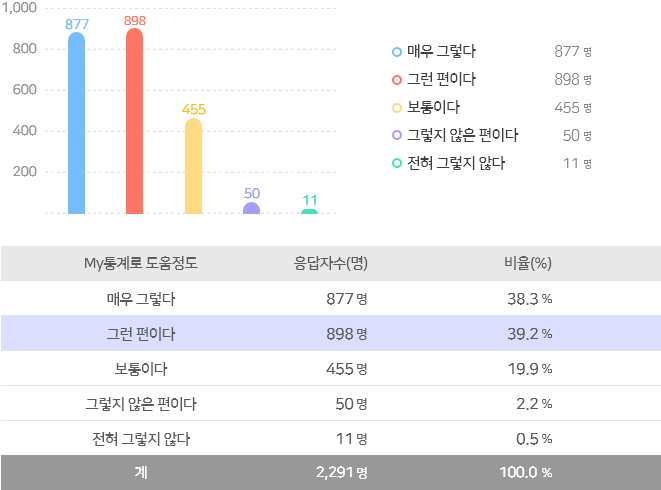
-
SGIS 서비스 만족도SGIS 서비스 전반에 대한 만족여부에 대하여 이용자는 ‘만족하는 편이다‘ 1,233명(53.8%)으로 가장 높았고, ‘매우 만족한다‘ 581명(25.4%), ‘보통이다‘ 412명(18.0%), ‘만족하지 않는 편이다‘ 61명(2.7%), ‘전혀 만족하지 않는다' 4명(0.2%) 순으로 나타남[문7] 귀하께서는 통계지리정보서비스(SGIS)에 대해 전반적으로 얼마나 만족하십니까?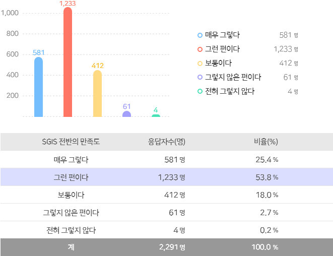
-
SGIS 서비스 불만족 사유SGIS 서비스에 만족하지 않는 이유에 대하여 ‘이용방법에 대한 설명 부족‘이 693명(30.2%)으로 높게 나옴[문8] 통계지리정보서비스(SGIS)에 “만족하지 않는다”면, 그 이유는 무엇입니까?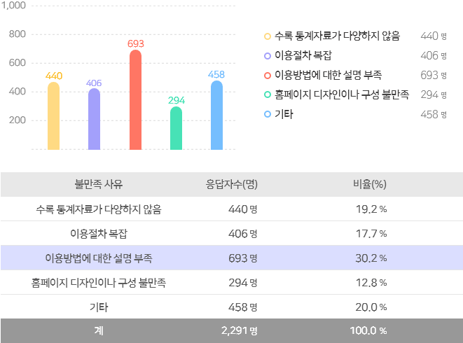
-
SGIS가 개선해야 할 부분(중복응답)SGIS 서비스가 개선해야 할 부분에 대하여 ‘다양한 방법으로 지속적인 홍보‘가 1,039명(28.5%)으로 가장 높았고, 다음으로는 ‘서비스 이용 편의성 확대 및 절차 간소화‘ 670명(18.4%) 이었음[문9] 통계지리정보서비스(SGIS)의 개선할 부문은 무엇이라고 생각하십니까?(중복응답)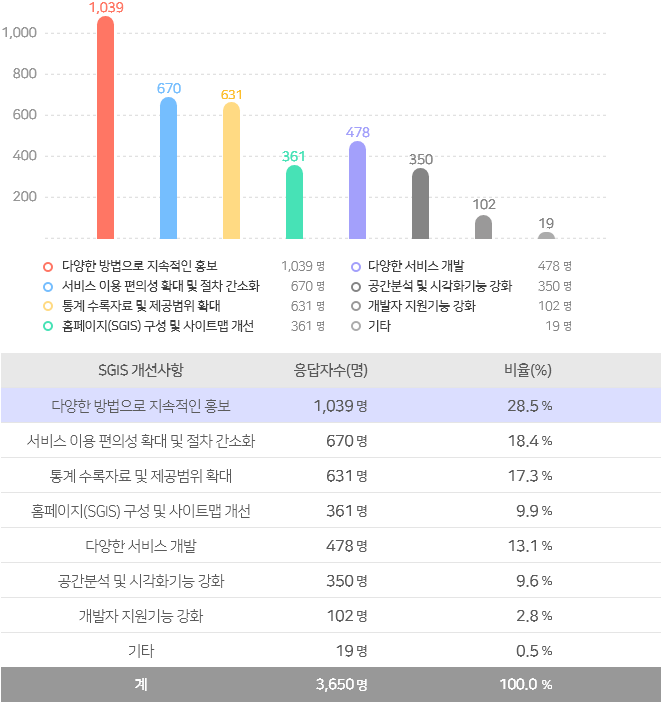